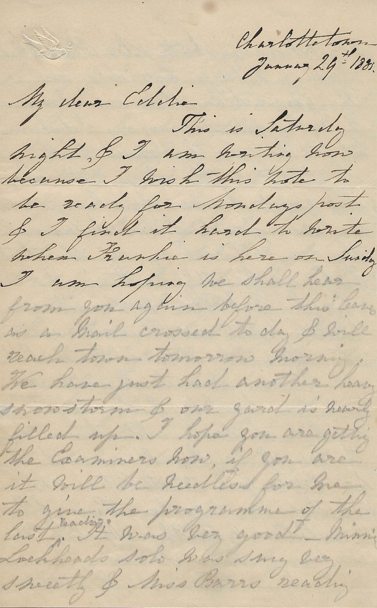

Charlottetown
January 29th, 1881.
My dear Eddie
This is Saturday night, & I am writing now because I wish this note to be ready for Monday’s post & I find it hard to write when Frankie is here on Sunday. I am hoping we shall hear from you again before this leaves as a Mail crossed today & will reach town tomorrow morning. We have just had another heavy snowstorm & our yard is nearly filled up.
I hope you are getting the Examiners now, if you are it will be needless for me to give you the programme of the last reading. It was very good - Minnie Lockhead’s solo was sung very sweetly & Miss Barr’s reading very amusing, but Mr. Bambrick’s reading was a horrible one, “The Guardian Hamon” from K.C. Record, & everyone believes it to be Mr. B.’s own writing; is it not? He does not show his good sense by always reading his own productions because they are not always of the best & he is greatly criticized.
Sarah & Willie were at a little party on Thursday evening at Mr. McLean’s (Dr. Hobb’s old house) Mrs. McL. said it was her birthday, & her children wished to have all their teachers to Tea & as Sarah used to teach her little girl at St. Peter’s she wanted her to go too; Pussy & Bella MacLellan were there, Rosa & Ellinor DesBrisay, Annie Lawson, Mamie & Georgie MacLeod, although Willie was the only gentleman he enjoyed himself & so did everyone else.
We have not seen or heard anything of G. Hays & your slippers are not yet ready to send though Dorsey says he will have them made soon. Sarah & I have one pen between us, so whilst she was writing at her illegible I took a pencil. I hope you enjoyed the skating that day. Your account of the Graham trial greatly amused us all.
I am glad to say that one of our horses (the red one) is sold to Waddell, he gave $75 or rather an order on Mr. D. Davis for that amount & we are hoping Tom will soon find a purchaser for the other. I will enclose Robert’s last letter, in which you will see a word where I think he must have made a mistake, so I have altered it as I think he meant it to be.
They are all well at Tom’s & Maggie’s, we have had such stormy weather that we have not seen quite so much of them. Little Winnie spent the day with us on Thursday & went with me in the afternoon to the sewing meeting, where she was much admired. Sarah & I have been intending to go in some evening to chat a while with the MacLellans illegible But somehow days & weeks slip by without our finding time. S. promised Bella to send her the Record with Mr. Bambrick’s horrible reading in it.
My head aches & my paper full so I will conclude. All unite in best love with your loving Mother. S. Harris